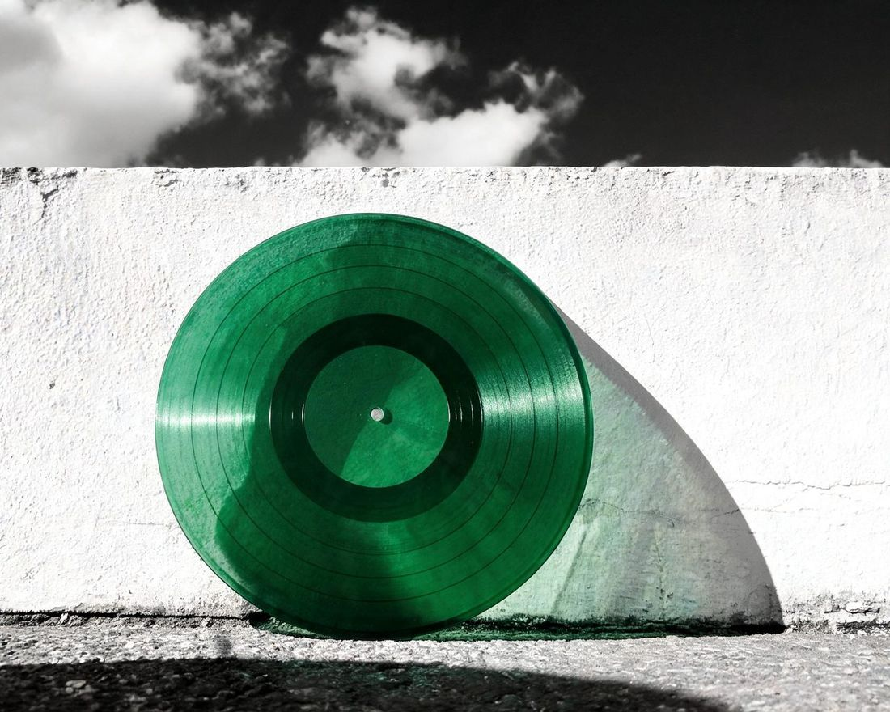

WELCOME TO ZODIAC
Hear the sound
of you.
Music tuned to you.
So you can tune into yourself.

Your birth moment.
Your frequencies. Your music.
01 / FIND YOUR SOUND
Let’s find yours.
Your birth details become four personal frequencies. First hear them as tones, then inside music.
02 / TUNE IN
Your sound. Press play.
Core · The signal for who you are.
A frequency gives a tone its pitch.
Let’s hear your Core.
One of your four frequencies. Tap to explore.
NOW, HEAR IT IN MUSIC
Hear your tone, then choose a song.